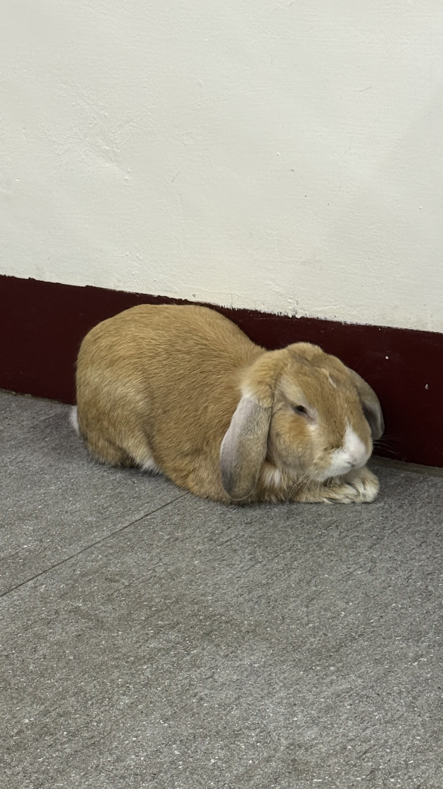

ARCHIVAL DOSSIER · FOLIO MMXXVI

PLATE NO. 01 · CURATED DOSSIER
Bridging Systems, Cryptography & Visual Aesthetics
place
Kaohsiung, Taiwan
22.6273° N, 120.2662° E
mail
tingyu.chang@cse.nsysu.edu.tw
arrow_outward
Curriculum Vitæ
(PDF ↗)
REV. 2026.10
張庭瑜 Ting-Yu Chang
國立中山大學資訊工程學系 · 系統架構與密碼學探索者
立足於西子灣畔的資工探索者，穿梭於底層硬體電路、網路協定與幾何碎形演算的邊界。專注於現代密碼學（橢圓曲線密碼學與分散式帳本驗證架構）以及嵌入式串列通訊系統，以工程師的嚴謹邏輯拆解複雜系統，同時保有對視覺比例與人文構詞的敏銳直覺。
歷練涵蓋 C/C++ L-System 幾何演算法設計、POSIX 網路串列通訊協定實作、FPGA 數位電路驗證，並積極參與校園開發者社群（GDG on Campus）介面策劃與國際商管個案分析。在嚴謹的編譯時序與感性的弦音閱讀之間，構築兼具技術厚度與美感質地的數位實踐。
“以嚴謹之演算錨定秩序，以自由之美感探尋未名。”— 個人工程哲學與研究筆記
Research Emphases & Critical Inquiries
#Cryptography
#SystemsProgramming
#AlgorithmicArt
#EmbeddedTech
#DigitalLogic
#InterfaceAesthetics
NSYSU
學術駐地
資訊工程學系 · 計算機系統與工程
12+
實作典藏
密碼學演算法 · 系統通訊 · 數位電路
04
核心範疇
ECC密碼學 · 嵌入式通訊 · L-System · 數位邏輯
C/Py
主力語言
C/C++ · Python · Verilog · TypeScript
Typeset under the supervision of Editorial Dossier Studio
CC BY-NC 4.0
·
ALL RIGHTS RESERVED